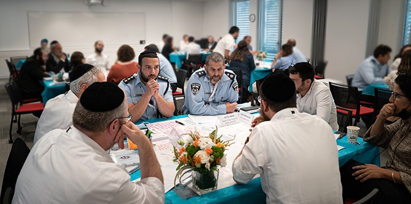
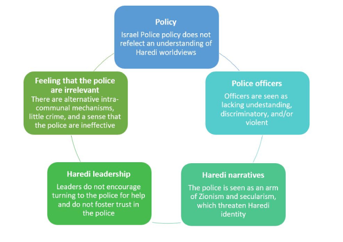
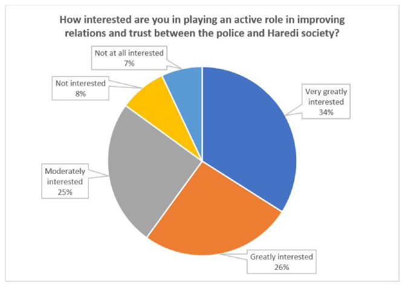
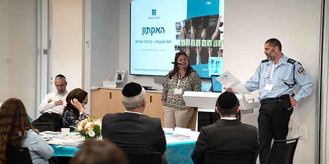

As part of an attempt to restore trust between the Israel Police and the Haredi (ultra-Orthodox) community, the Mandel Leadership Institute was asked to assist the police in formulating a plan of action. The culmination of the process was a hackathon on the relationship between the police and the Haredi community, which was held at the Mandel Leadership Institute.
 Photo: Yariv Weinberg, Simanim
At the beginning of March, Deputy Police Commissioner Yaakov Cohen presented a challenging request to the staff of the Mandel Program for Leadership Development in the Haredi Community: Having been appointed by the police commissioner to head a strategic team tasked with developing a plan of action to improve trust between the police and the Haredi community, Cohen sought assistance from the program and its graduates in preparing this plan. On the agenda: mapping the division between police and the Haredi community, formulating policy, and suggesting initiatives that could help bring change.
The staff and faculty of the Mandel Leadership Institute undertook to examine how the program and graduates could best help the police. It was decided that the faculty and staff would hold a series of consultations with relevant graduates, in order to formulate a list of recommendations. Whenever possible or relevant, these consultations would also include representatives of the police work team and other relevant participants. The process is being led by Dr. Aviad Hollander, a member of the teaching faculty of the Mandel Program for Leadership Development in the Haredi Community who is responsible for the program’s graduate activities.
In addition to in-depth conversations with graduates and various other figures in Haredi society, more than 60 graduates completed a questionnaire that was distributed to the program’s graduate community. The responses described the barriers to building trust between the police and the Haredi community, based on the respondents’ professional experience and personal familiarity with the various Haredi sub-groups. The respondents were also asked to suggest avenues of activity by the police and within the Haredi community that could help the police develop a strategic program to increase civilian security in Haredi society.
The analysis of the responses focused on five main assumptions underlying Haredi discourse on relations with the police:

The next stage in the process was running a hackathon brainstorming event in which small groups engaged in creative work on relations between the Israel Police and the Haredi community. Held on April 21, 2021 at the Mandel Foundation building in Jerusalem, the hackathon was planned and led by a team comprising Lior Peri, director of the Mandel IDF Educational Leadership Program; Nili Tal, an organizational consultant who is a faculty member of the Mandel IDF program and a personal tutor for the women’s track of the Mandel Program for the Leadership Development in the Haredi Community; Rabbi Asher Melamed, who served for years as a rabbi in the Israel Police and now heads an organization focused on preventing sexual abuse and helping sexual abuse victims; and Benny Shachar, a fellow of the Mandel Program for Leadership Development in the Haredi Community and an officer in the Israel Police Behavioral Science Department.
Over 40 graduates participated in the hackathon, alongside senior Israel police officers and senior officials from the Ministry of Public Security. At the beginning of the event,
Yael Hess, director of the Mandel Leadership Institute, presented the rationale behind the Institute’s operations. Deputy Police Commissioner Yaakov Cohen discussed the main challenges facing the police, and
Dr. Naomi Perl, director of the Mandel Program for Leadership Development in the Haredi Community, described the main characteristics of the program’s graduates and presented the goals of the hackathon. Dr. Aviad Hollander next presented relevant findings from the questionnaire. These included the high level of motivation that graduates have to play an active role in improving relations between the police and the Haredi community:

Nili Tal presented the principles of “design thinking,” on which the hackathon was based, and explained the working rules for the event. After brief personal introductions, which introduced the Mandel representatives and Police representatives, the participants split into two separate rooms.
In one room, Lior Peri and Naomi Perl led a discussion with officers of the Israel Police and representatives of the Ministry of Public Security. This forum heard from
Fainy Sukenik, founder and director of Ba'asher Telchi, a non-profit organization that supports Haredi women in the process of divorce and a graduate of the Mandel School for Educational Leadership, and
Rabbi Menachem Bombach, director of the Netzach Haredi Educational Network and a senior staff member of the Mandel Leadership Institute, both of whom presented their achievements in the educational and social realms of the Haredi community as a model of effective field work by Mandel graduates.
 Photo: Yariv Weinberg, Simanim
In the second room, Nili Tal and Dr. Aviad Hollander led five parallel discussion groups, each of which explored one of five premises underlying Haredi discourse on relations with the police. The group members were asked to map the implications of these assumptions, the factors that might strengthen or weaken them, and the stakeholders invested in maintaining or changing the current situation. They were also asked which themes that emerged from their discussions are most important, and to suggest which avenues of implementation might be the most practicable. After the groups finished their deliberations, the police and ministry representatives joined the discussion groups to hear their conclusions and initial ideas for initiatives that might improve the situation. The main insights and proposals of the groups were then presented to the entire plenum by representatives of the groups and police officers.
At the conclusion of the event, Deputy Commissioner Cohen expressed his appreciation for the rapid and focused process, and requested practical recommendations based on the insights that had emerged. Aviad Hollander proposed holding further forums of representatives of the Haredi community and of the Israel Police that would focus on specific areas of activity. Naomi Perl concluded with thanks for the confidence that the Israel Police have in the Mandel fellows and graduates and for its invitation to maintain an open channel of dialogue and collaborative thinking with the program’s faculty and graduates, with the aim of promoting practical initiatives.
{kind=link}
{kind=link}
{kind=link}
{kind=link}